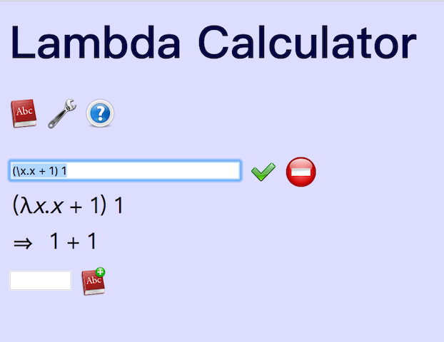
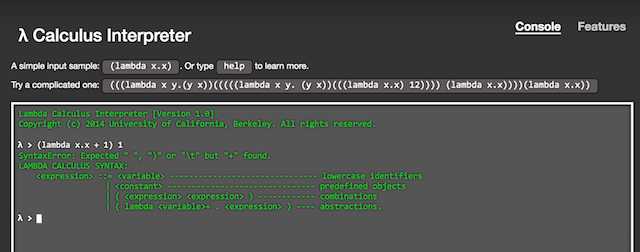
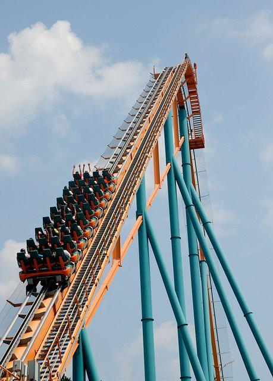

面向眼科医生的λ演算入门教程(4)
Lambda calculus的写法规则还有一些细节要讲讲。虽然看起来琐碎，不过就好似过山车刚开出去，不紧不慢地开了足够高以后，落下来的时候才足够刺激。这一章仍然是慢慢爬高的过程。
Lambda Expression
λ表达式Lambda Expression，有4种可能的写法，我们用E来表示Lambda Expression 1. E是ID 2. E是λID. E 3. E是E E 4. E是(E)
比如(λx.x) HelloWorld就是一个lambda expression，它是由：
- (λx.x)和HelloWorld中间加空格连起来的，【规则3: E E】
- HelloWorld也是lambda expression，【规则1: ID】
- (λx.x)是lambda expression，【规则4: (E)】
- λx.x是lambda expression，【规则2: λID. E】
- x是lambda expression，【规则1: ID】
再举些关于lambda expression的例子
- x y 是lambda expression，【规则3: E E】
- λx.λ 不是lambda expression，λ后面一定要有东西
- λλx.y 不是lambda expression，不能俩λ
- λx.λy.x 是lambda expression
- x 1，这事不好说，看你的interpreter如何理解ID了，因为在lambda calculus里面并没有数字1，如果把1当作是一个ID，可以，但如果把我们通常所理解的数字1的属性也给它，并不是天然成立的。
- x + 1，同上，如果interpreter把+号当作一个ID，这是可以的，但如果是我们常规理解的加法操作，并没有定义。
比如用http://www.cburch.com/lambda/ 这个interpreter是可以输入(λx.x + 1) 1，并不能返回2，只能给出1 + 1，也就是用1这个符号ID替换了bound variable x 
如果用https://people.eecs.berkeley.edu/~gongliang13/lambda/#firstPage 这个interpreter输入(lambda x.x + 1) 1 则会报语法错误。 
消除歧义
我通常能加括号的地方都喜欢加上括号，这样虽然要仔细数括号，但不容易出现歧义。不过在看书的时候，也许是为了美观，也许是为了简单，人们会做一些省略引入一些歧义，再增加一些约定来消除这些歧义。
λx.λy.x x y这个lambda expression就可以有多种加括号的方式，简直可以出一道组合数学题了，其中一些比如：
- (λx.λy.(x)) (x y)
- (λx.(λy.(x x y)))
- (λx.(λy.(x x))) y
这些加括号的方式都不是按照约定理解后的方式。 约定是这样的： 左结合，比如x y z u v w等价于((((x y) z) u) v) w λID.后面的范围要尽可能延长，比如λx.λy.λz.x等价于λx.(λy.(λz.x))
所以上面λx.λy.x x y正确的加括号方式是((λx.(λy.x)) x) y ((λx.(λy.x)) x) y ⇒ (λy.x) y ⇒ x
还会有些琐碎的定义，比如 λID. E称为abstraction，类比于函数的定义 E E称为application，类比于函数的调用 λx.x和λy.y是相等的 ……
不过这些都已经不影响玩了。过山车已经走到顶了，准备尖叫吧

注释
Comments powered by Disqus